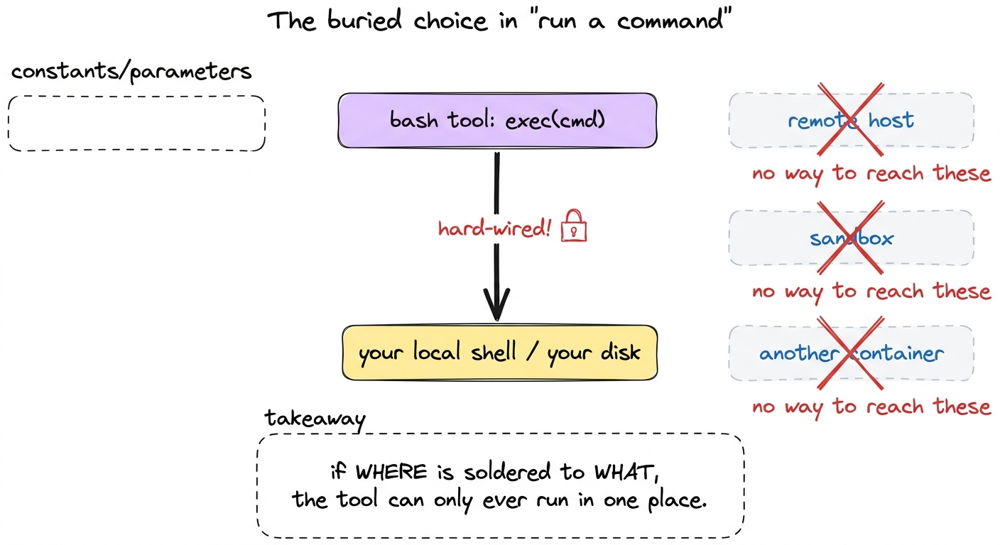
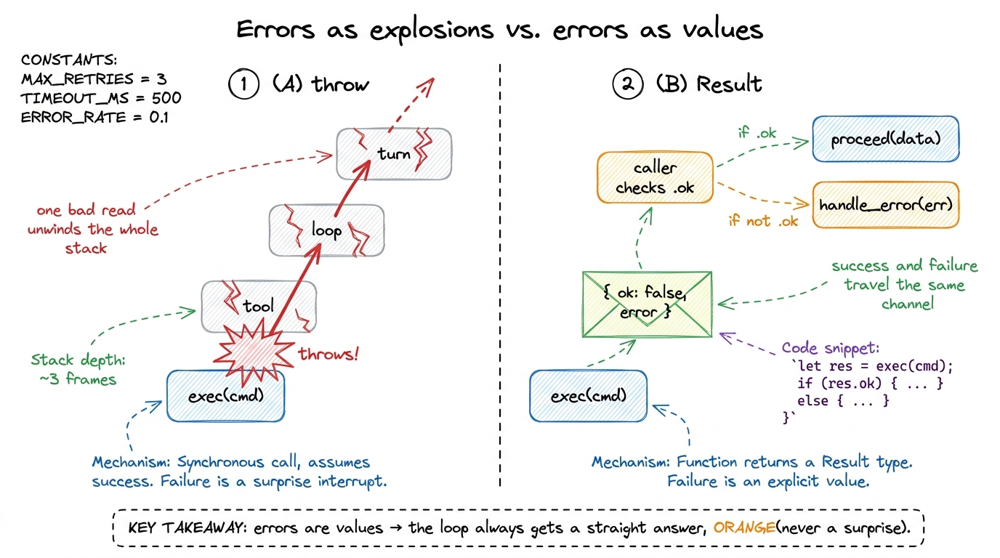
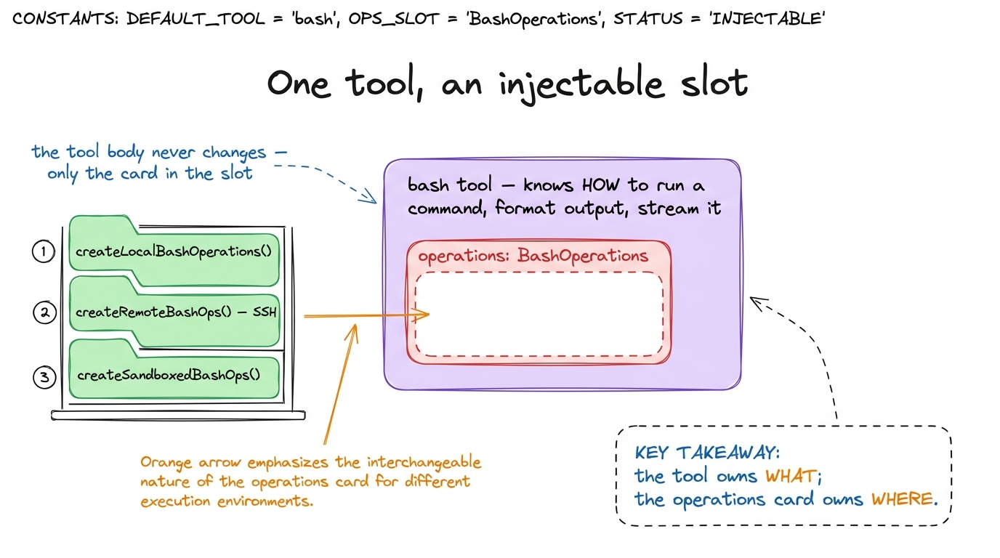
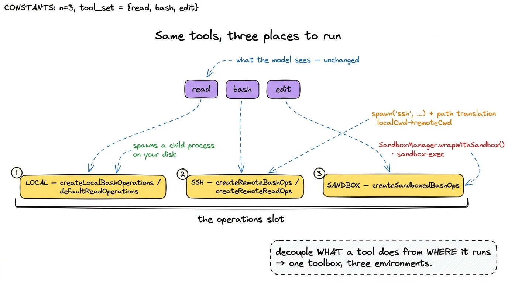

The execution environment: local, SSH, sandboxed BUILD
The toolbox chapter left a question hanging that is easy to skate past. Pi's read tool reads a file; its bash tool runs a command. But reads a file on which machine? Runs a command in whose shell? We watched the tools produce results, and quietly assumed the answer was "on your laptop, in your shell." That assumption is wired into a normal agent so deeply that you cannot pull it back out. Pi refuses to bake it in — and this chapter is about the two layers it uses to keep the wiring loose.
The payoff is a single, slightly startling capability: the same read, the same bash, the same edit, run against three completely different backends — your local disk, a remote host over SSH, or an OS-level sandbox — and not one line of the tool changes. To get there, Pi separates what a tool does from where it runs. Let me show you both halves of that separation, then watch a real extension flip the backend out from under a live tool.
The problem: "run this command" hides a choice
Go back to the naked bash tool from your first bare harness. It ran a command with subprocess.run(cmd, shell=True). That one line is a commitment: commands run here, in this process's shell, on this filesystem. If you later want the agent to operate on a remote build server, or inside a jail that can't touch your home directory, you have nowhere to stand — the "where" is soldered to the "what."
Pi's answer is to name the "where" as a thing you can pass around. Two layers do this, at two altitudes: a harness-wide capability called ExecutionEnv, and a per-tool injection called operations. We'll take them in that order.

figure rendering · A naive tool solders the execution location into the command call. Pi'Layer 1: ExecutionEnv — the harness's file-and-process backend
At the harness level, every file touch and every process spawn goes through one interface: ExecutionEnv, defined in packages/agent/src/harness/types.ts. It is nothing exotic — it is literally two smaller capabilities glued together:
export interface ExecutionEnv extends FileSystem, Shell {}FileSystem is the file half — readTextFile, readBinaryFile, writeFile, appendFile, listDir, fileInfo, canonicalPath, createDir, remove, createTempDir, createTempFile, cleanup. Shell is the process half, and it is astonishingly small — one method that matters:
export interface Shell {
exec(command: string, options?: ShellExecOptions):
Promise<Result<{ stdout: string; stderr: string; exitCode: number }, ExecutionError>>;
cleanup(): Promise<void>;
}That is the whole shape of "run a process" in Pi: hand it a command, get back stdout, stderr, and an exitCode. The default implementation is NodeExecutionEnv in env/nodejs.ts — it spawns real Node child processes and reads real files. But the harness only ever speaks to the interface, so you could hand it a different ExecutionEnv and it would never notice.1 This is dependency inversion in its plainest form. The harness depends on the idea of a filesystem-and-shell, not on Node's fs and child_process. Naming the dependency as an interface is what makes it swappable later — the entire chapter is one long consequence of this one line.
The error model: failures are values, not explosions
Before we go further, look again at the return types above. exec doesn't return {stdout, stderr, exitCode}. It returns Result<{stdout, stderr, exitCode}, ExecutionError>. That Result wrapper is not decoration — it is a deliberate law, and Pi enforces it in the interface's own doc comment: "Operation methods must never throw or reject. All filesystem failures, including unexpected backend failures, must be encoded in the returned Result."
Result itself is four lines:
export type Result<TValue, TError> =
| { ok: true; value: TValue }
| { ok: false; error: TError };So every call comes back tagged. You check result.ok; if it's true you read result.value, if it's false you read result.error — a typed FileError (codes like not_found, permission_denied) or an ExecutionError (timeout, aborted, spawn_error). Nothing is thrown. A missing file is not a crash; it is a value that says "not found," which the caller must look at.
Why does an execution-environment chapter care so much about error style? Because the backend is exactly where the ugly, unavoidable failures live — the disk is full, the SSH tunnel dropped, the sandbox denied the write. If any of those threw, a single bad file read could unwind the whole agent loop mid-turn. By making failure a value that travels up through the same channel as success, Pi guarantees the loop always gets a straight answer it can reason about, whether the backend is local, remote, or jailed.2 The codebase keeps one escape hatch, getOrThrow, described in-source as "intended for tests and explicit adapter boundaries." So the rule isn't dogma — it's "never throw across the harness boundary," with a labelled door for the two places where throwing is actually clearer.

figure rendering · Pi's backend never throws across the harness boundary; every failure iLayer 2: per-tool operations — swapping the backend without touching the tool
ExecutionEnv swaps the backend for the whole harness. But Pi wants something finer: swap the backend for one tool — run bash remotely while read stays local, say. So each backend-touching tool takes a small injected object called its operations, and does all its I/O through that object instead of calling Node directly.
For the bash tool, the contract is BashOperations in packages/coding-agent/src/core/tools/bash.ts — again, one method:
export interface BashOperations {
exec: (command: string, cwd: string, options: {
onData: (data: Buffer) => void;
signal?: AbortSignal;
timeout?: number;
env?: NodeJS.ProcessEnv;
}) => Promise<{ exitCode: number | null }>;
}The default, createLocalBashOperations(), spawns a real child process on your machine. For the read tool, the parallel contract is ReadOperations in tools/read.ts:
export interface ReadOperations {
readFile: (absolutePath: string) => Promise<Buffer>;
access: (absolutePath: string) => Promise<void>;
detectImageMimeType?: (absolutePath: string) => Promise<string | null | undefined>;
}with the default defaultReadOperations reading straight off the local disk. There are matching WriteOperations, EditOperations, and grep operations, each the same idea. The wiring is uniform: every tool factory ends with const ops = options?.operations ?? createLocalBashOperations(...). Pass operations and it uses yours; pass nothing and it falls back to local.3 Notice how thin these interfaces are. BashOperations is one function; ReadOperations is two-and-a-half. That thinness is the whole point — the smaller the contract a backend must satisfy, the more places you can plausibly implement it. A fat interface would be a fat barrier to writing an SSH backend.

figure rendering · Each backend-touching tool exposes an operations slot. The tool body iWatch it happen: the SSH extension flips the slot
Now the payoff, and it is a real file you can read: packages/coding-agent/examples/extensions/ssh.ts. Run pi -e ./ssh.ts --ssh user@host and the agent's read, write, edit, and bash all execute on the remote box. The extension writes zero new tools. It only writes new operations.
Here is its remote bash backend — the same BashOperations shape, implemented over the ssh command:
function createRemoteBashOps(remote: string, remoteCwd: string, localCwd: string): BashOperations {
const toRemote = (p: string) => p.replace(localCwd, remoteCwd);
return {
exec: (command, cwd, { onData, signal, timeout }) =>
new Promise((resolve, reject) => {
const cmd = `cd ${JSON.stringify(toRemote(cwd))} && ${command}`;
const child = spawn("ssh", [remote, cmd], { stdio: ["ignore", "pipe", "pipe"] });
child.stdout.on("data", onData);
child.stderr.on("data", onData);
// ...timeout + abort handling, then:
child.on("close", (code) => resolve({ exitCode: code }));
}),
};
}Two things earn their keep. First, spawn("ssh", [remote, cmd]) — instead of running locally, it hands the command to ssh, which runs it on the far machine and streams output back through the same onData callback the local backend uses. Second, toRemote — a path translation that rewrites the local working directory into the remote one, because a path that means something on your laptop means nothing on the server. The remote read backend is the same trick: readFile becomes sshExec(remote, "cat ..."), access a remote test -r, image sniffing a remote file --mime-type.
And the wiring at registration is almost anticlimactic — the extension takes Pi's own local tools and swaps only the operations when an SSH target is set:
pi.registerTool({
...localBash,
async execute(id, params, signal, onUpdate) {
const ssh = getSsh();
if (ssh) {
const tool = createBashTool(localCwd, {
operations: createRemoteBashOps(ssh.remote, ssh.remoteCwd, localCwd),
});
return tool.execute(id, params, signal, onUpdate);
}
return localBash.execute(id, params, signal, onUpdate);
},
});That if (ssh) … else local is the entire behavioural difference between "run on your laptop" and "run on a server three timezones away." The model never learns anything changed — it still just calls bash.
The third place to run: an OS sandbox, same slot
The remote case proves the pattern; the sandbox case proves it generalises. The sandbox extension (examples/extensions/sandbox/index.ts) fills the exact same BashOperations slot, but instead of shelling out to another machine it wraps each command in an OS-level jail:
function createSandboxedBashOps(): BashOperations {
return {
async exec(command, cwd, { onData, signal, timeout }) {
const wrappedCommand = await SandboxManager.wrapWithSandbox(command);
const child = spawn("bash", ["-c", wrappedCommand], { cwd, /* ... */ });
// same onData streaming, same exitCode resolution
},
};
}It uses @anthropic-ai/sandbox-runtime — sandbox-exec on macOS — to enforce filesystem and network restrictions at the OS level, so a command the model runs physically cannot escape the box, no matter what it tries. Same interface, same read/bash/edit on the model's side. Three implementations of one slot: local, remote, sandboxed.

figure rendering · The same read/bash/edit tools fan out to three interchangeable backendWhat this bought us, and what it opens
Step back and name the move, because it recurs everywhere in Pi. The tool owns the hard, reusable work: parsing arguments, streaming output, formatting results, honouring the abort signal and timeout. The operations own the one variable detail — which machine, which jail, which disk. Split those apart and the number of environments you support stops being a property of your tools and becomes a property of a small object you can write in an afternoon.4 This is exactly why the SSH and sandbox files live under examples/extensions/ rather than in the core. They are extensions — nothing in Pi's core knows SSH exists. It only knows there is an operations slot, and that anyone is allowed to fill it. We follow that thread in Pi's extensibility model.
And notice the two layers now stack cleanly. ExecutionEnv is the harness's own floor — the filesystem-and-shell every internal subsystem stands on, with its never-throw Result discipline. Operations are the per-tool escape hatch layered on top, letting a single tool point somewhere else without disturbing the floor. Together they answer the question the toolbox chapter left open: the tools run wherever you point them, and pointing them somewhere new costs one small object, not a rewrite.
That decoupling is a safety story as much as a flexibility story — an OS sandbox is, after all, a blast-radius control. But deciding whether a given command is even allowed to run is a different mechanism, one that sits in front of the operations slot rather than inside it. That is where we go next: how Pi keeps its tools safe.